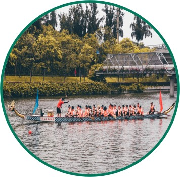
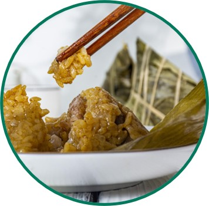
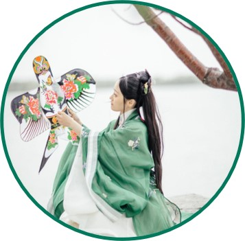
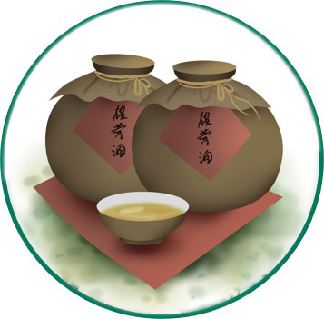

| 端午节由来 |
古老节日是传承古老文化的载
体，它们的由来与古老文化密切
相关。仲夏午月午日苍龙七宿飞
升于正南中天。“龙”是上古先
民的原始信仰，先民在每年“飞
龙在天”的仲夏端午以扒龙舟形
式举行盛大图腾祭，酬谢龙祖恩
德，祈福纳祥、压邪攘灾。 |
|
|
| 端午习俗 |
|  |
|
 |
 |
 |
| 扒龙舟 |
挂艾草与菖蒲 |
食粽 |
放纸鸢 |
喝雄黄酒 |
端午节是集祈福辟邪、欢庆娱乐和饮食为一体的民俗大节，由来于上古先民择"飞龙在天"吉日拜祭龙祖、祈
福纳祥、辟邪攘灾。习俗主要有赛龙舟、祭龙、采草药、挂艾草、打午时水、洗草药水、拜神祭祖、浸龙舟
水、吃龙舟饭、吃粽子、放纸龙、放纸鸢、拴五色丝线、佩香囊等等。赛龙舟活动在中国南方沿海一带十分
盛行，传出国外后深受各国人民喜爱并形成了国际比赛。
端午节是中华民族的传统佳节，它不仅清晰地记录着先民丰富而多彩的社会生活文化内容，也积淀着博大精
深的历史文化内涵。每到端午佳节，各种贺节活动在全国各地展开，节味浓郁，热闹喜气。正如歌谣:"五月
五，是端阳;吃粽子，挂香囊;门插艾，香满堂;龙舟下水喜洋洋。" |
|